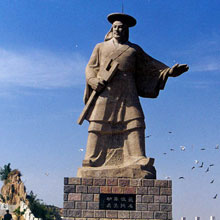

中国传统文化

中华传统文化，是中华文明成果根本的创造力，是民族历史上道德传承、各种文化思想、精神观念形态的总体。中华传统文化，依据中国历史大系表顺序，经历了有巢氏 、燧人氏、伏羲氏、神农氏（炎帝） 、黄帝（轩辕氏） 、尧、舜、禹等时代 ，到夏朝建立。之后绵延发展至今。
中华传统文化主要由儒、佛、道三家文化为主流组成。传统文化不仅思想深邃圆融，内容广博；更重要的是，儒家、佛家、道家三家文化，高扬道德，为国人提供了立身处世的行为规范，以及最终的精神归宿。儒家以仁义教化为核心，为历代儒客尊崇；道学以顺应自然为核心；佛学以慈悲、大爱、解脱为核心，强调“诸恶莫作，众善奉行”
中华传统文化主要由儒、佛、道三家文化为主流组成。传统文化不仅思想深邃圆融，内容广博；更重要的是，儒家、佛家、道家三家文化，高扬道德，为国人提供了立身处世的行为规范，以及最终的精神归宿。儒家以仁义教化为核心，为历代儒客尊崇；道学以顺应自然为核心；佛学以慈悲、大爱、解脱为核心，强调“诸恶莫作，众善奉行”